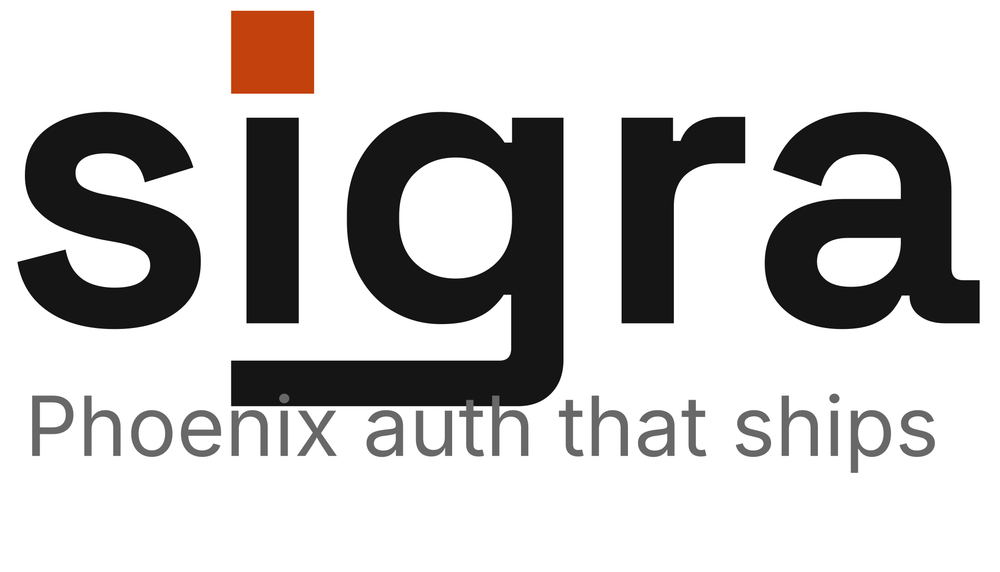
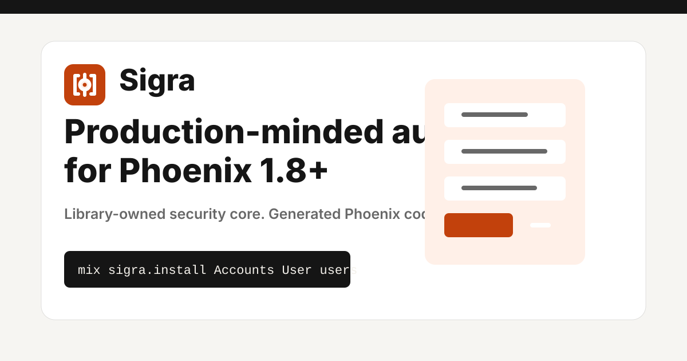
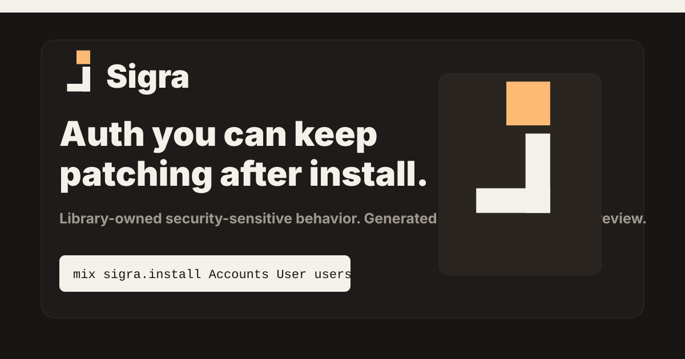
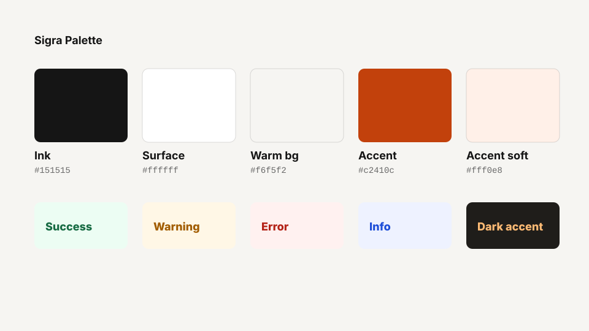
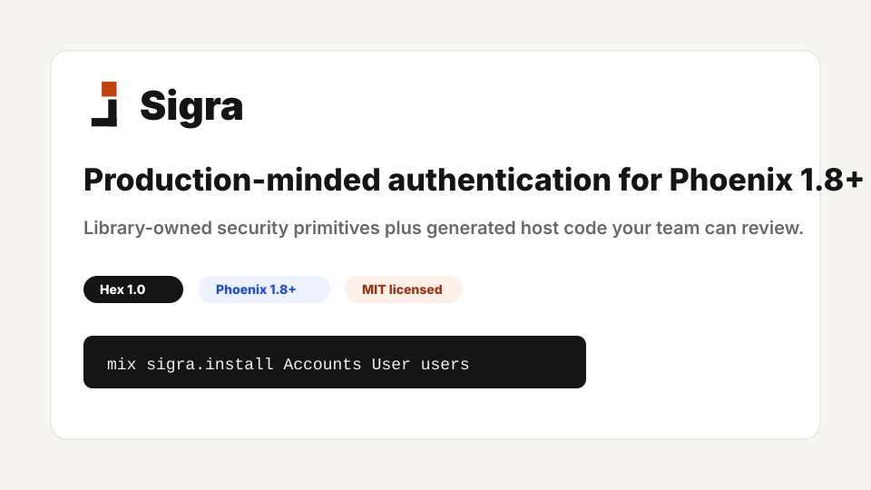
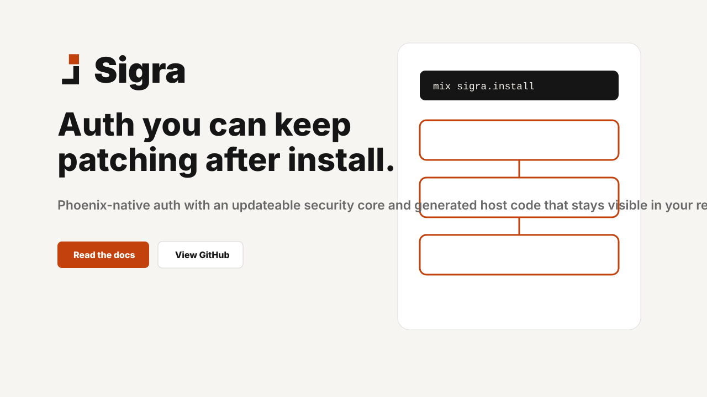
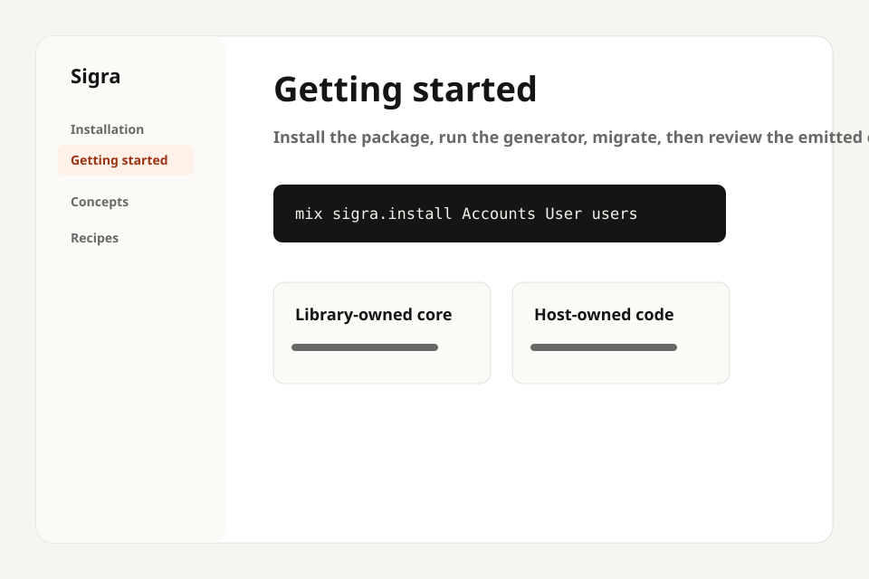
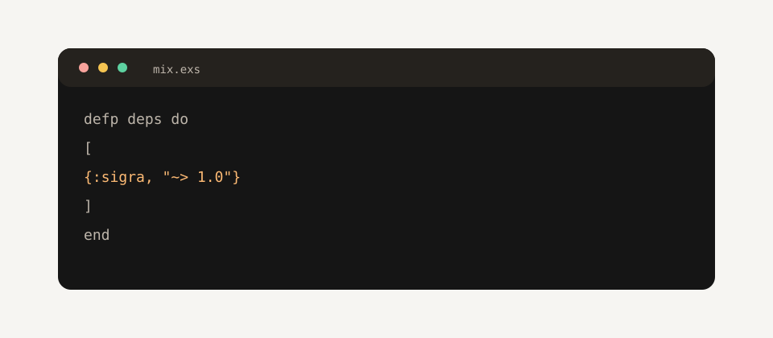
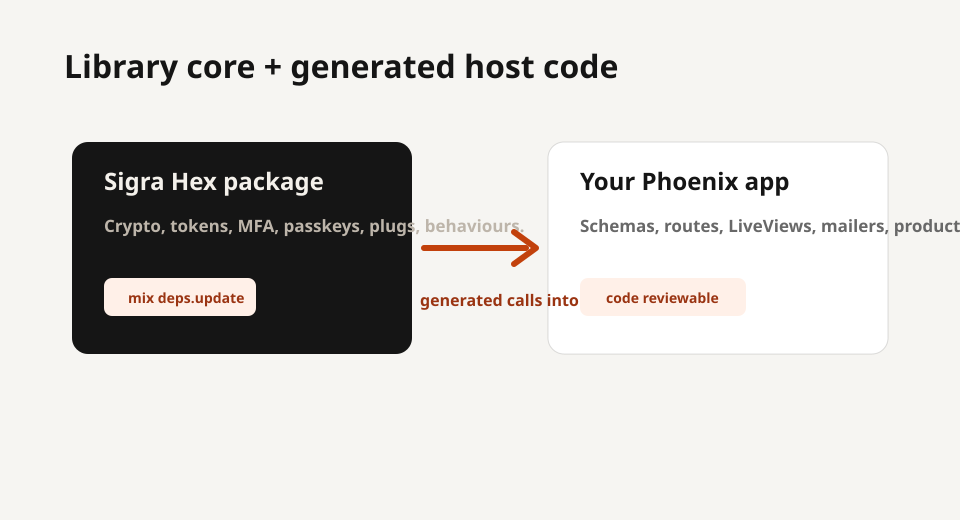

Prove
Every claim should connect to a real command, file, generated module, or ownership boundary.
Brand reference
Sigra's brand should feel like its architecture: library-owned security-sensitive behavior, generated Phoenix code your team can review, and explicit boundaries instead of launch-page fog.
This brandbook is intentionally source-controlled as HTML, Markdown, JSON, CSS, and SVG. No PDF dependency. No web fonts. No raster payload unless a distribution target requires it.
$ open brandbook/index.html $ jq . brandbook/tokens.json $ xmllint --noout brandbook/logo-mark.svg
Operating standard
Every claim should connect to a real command, file, generated module, or ownership boundary.
Make library-owned behavior, host-owned code, and reviewable integration points easy to scan.
No mascot, no generic auth lock illustration, no blue-purple gradients, no "seamless next-generation" language.
Brand DNA
Production-minded Phoenix authentication that stays patchable after install.
Phoenix teams, Elixir maintainers, SaaS builders, and operators who want auth control without owning every sensitive edge forever.
Black-box magic, hosted-auth cosplay, enterprise fluff, vague innovation language, and decorative geometry with no contract meaning.
Scorecard
Tokens
Logo system
The D4 Linked Rail is a fully integrated typemark. The ember-colored rail block above the i and the extended g tail form a single bracketing rail — the mark is structural in the letterforms, not applied on top.



favicon.svg source — it is optimised for square display at very small sizes.ember-300, ember-200, or any non-700 ember step — the rail block must use ember-700 #c2410c on light surfaces.logo-primary-dark.svg instead.Suite architecture
The szTheory OSS suite uses a shared design vocabulary while each library owns its mark, accent hue, and domain metaphor. This keeps the suite coherent without forcing visual uniformity.
| Library | Domain metaphor | Accent hue |
|---|---|---|
| Sigra | Protected core framed by visible host-code rails — the g tail and rail block bracket the letterforms as the library brackets the host app. | Ember ~15° — #c2410c |
| Accrue | Ledger accumulation — precision tracking of resources over time. | Unique hue, ≥15° from siblings |
| Mailglass | Transparent delivery — mail flows through a visible, inspectable channel. | Unique hue, ≥15° from siblings |
| Threadline | Trace — a continuous thread connecting events in sequence. | Unique hue, ≥15° from siblings |
| Lockspire | Lock-spire — a lock whose shackle terminates in a rising spire, connoting aspiration within constraint. | Unique hue, ≥15° from siblings |
| Relyra | Reliability — dependable infrastructure, the lyre's consistent resonance. | Unique hue, ≥15° from siblings |
| Rulestead | Governance — a steadfast ruleset, homestead-level permanence. | Unique hue, ≥15° from siblings |
Inherit Space Grotesk v2.0 (OFL, wght 700) as the suite wordmark typeface. All seven library logotypes use this face at the same weight for a recognisable family relationship.
Each library adopts a unique mark that reflects its domain metaphor. The mark must be legible at 16 px (favicon), 24 px (compact UI), and in monochrome. Do not reuse or adapt Sigra's D4 rail system for a sibling mark.
Each library selects an accent hue at least 15° from every existing sibling's hue on the color wheel. Sigra occupies ember ~15°. New libraries must verify the separation against all currently ratified sibling hues before committing a color.
Visual examples






Voice
Sigra gives Phoenix teams an updateable authentication core while keeping generated application code visible in the host repo.
Landing and docs blueprint
| Surface | Required content | Brand behavior |
|---|---|---|
| Landing hero | Name, promise, install snippet, docs/GitHub CTAs. | Show product mechanics first; no abstract hero art. |
| Docs intro | Installation, quickstart, ownership boundary, example. | Explain the contract, then show code. |
| Comparison | phx.gen.auth, hosted auth, composed legacy libraries. | Boundary-first, not superiority theater. |
| Release note | Changed behavior, compatibility, migration, proof. | Concrete, calm, and linkable. |
Repo artifacts
Markdown, HTML, JSON, CSS, SVG logos, SVG specimens.
PNG social card exports, PDFs, screenshot captures.
Font files, stock images, vendor-locked exports, large binary asset packs.